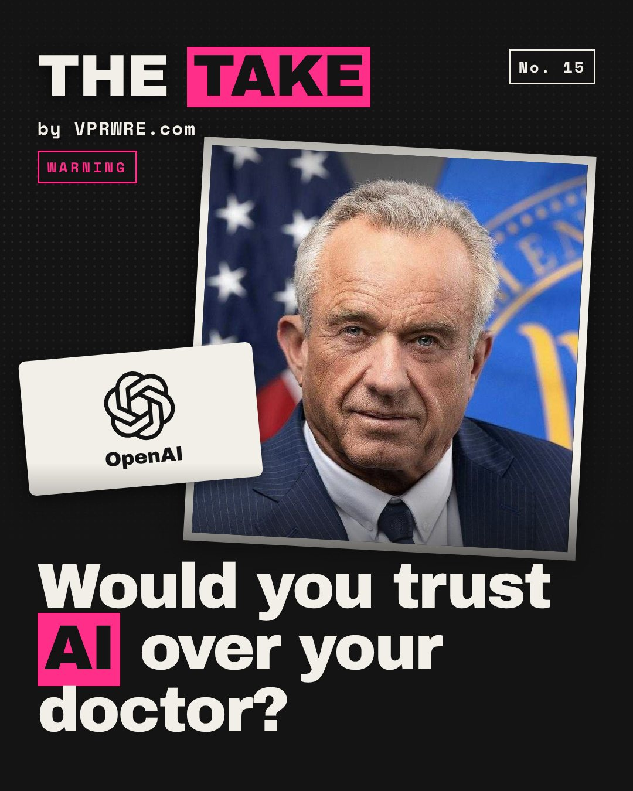

Policy
Would you trust AI over your doctor?
America’s health secretary says AI is better informed than your doctor, and he said it on a stage AI companies helped pay for.

On Sept 29, at the MAHA Summit in Washington, Robert F. Kennedy Jr. said AI can give “a second opinion that is much better informed than any doctor in the country.” His pitch: a thousand-page record, a six-minute visit. On being told a vaccine prevents transmission: “AI may say it actually doesn’t do that.”
OpenAI and Anthropic were among about 25 sponsors. Onstage, an OpenAI executive called skipping AI “medical malpractice,” the Washington Examiner reported. Kennedy says Sam Altman told him the same. We found no such statement from Altman on the record.
On Sept 30, the AMA and five other doctor groups warned that calling AI better informed than physicians risks “undermining patients’ trust.” They didn’t name Kennedy. Yet in an Edelman–Yale survey of 13 countries, 49% say a non-expert using AI can match or beat a doctor on at least one health task.
Our take: use AI, keep the doctor. AI that reads your whole chart is a real upgrade. But when the companies selling it sponsor the stage, that’s a pitch, not a diagnosis.
A second opinion is only as good as who’s paying for it.
Next time AI and your doctor disagree, who do you believe?
Anthropic was one of the summit’s sponsors.
The carousel
11 slides · Open on Instagram
Disclosure: VPRWRE drafts with Claude, Anthropic’s AI.